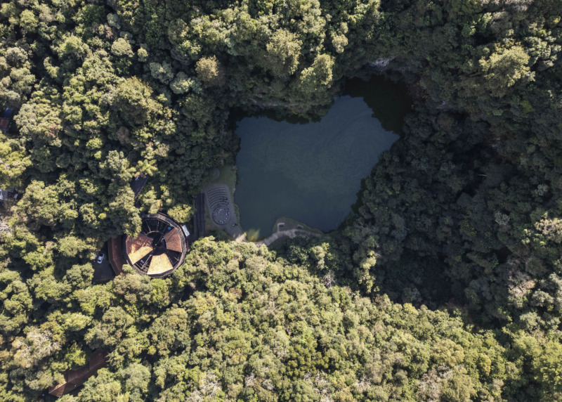
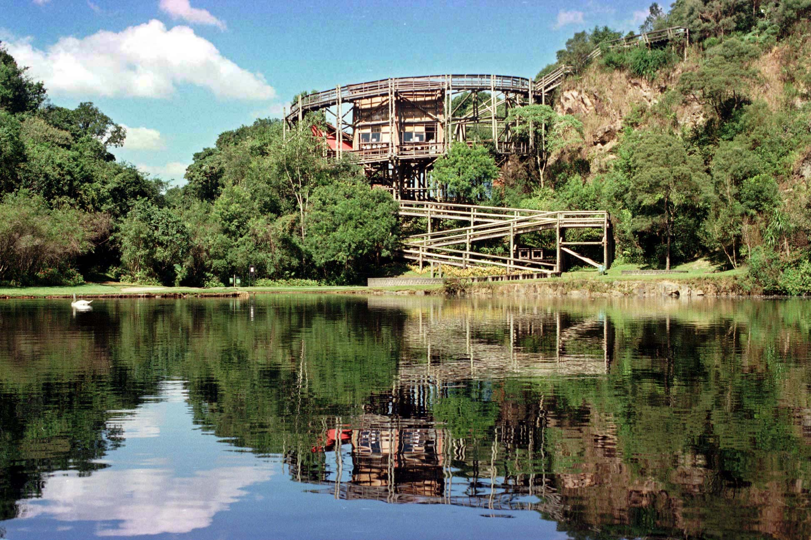
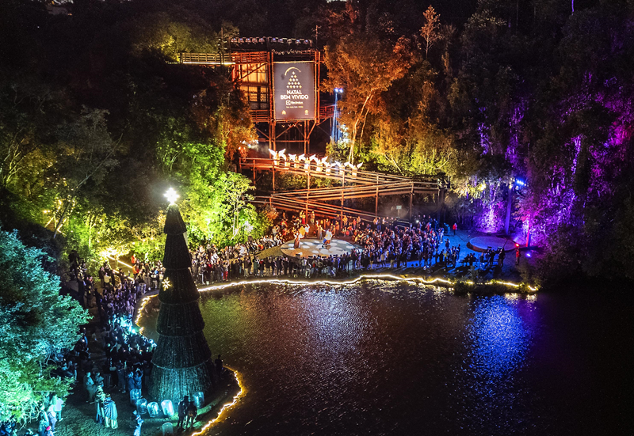

sobre o bosque Zaninelli
O Bosque Zaninelli é um marco do urbanismo ecológico de Curitiba, famoso por abrigar a Universidade Livre do Meio Ambiente (Unilivre) no bairro Pilarzinho. Inaugurado em junho de 1992 com a presença do oceanógrafo Jacques Cousteau, o parque de 37 mil m² transformou a cratera de uma antiga pedreira de granito em um cenário de regeneração ambiental. O grande destaque do local é a sua arquitetura sustentável integrada à natureza, composta por uma torre de 15 metros construída com troncos de eucalipto que circunda um paredão de rocha e um lago cristalino. O espaço funciona como um centro de educação ambiental, unindo preservação, arquitetura cênica e biodiversidade em meio à mata nativa.

contexto historico
O Bosque Zaninelli, fundado em junho de 1992, é um dos maiores símbolos da transformação ecológica e urbana de Curitiba. A área de 37 mil m² abrigou, entre 1947 e 1983, a pedreira da família Zaninelli, voltada à exploração de granito, que deixou como herança um enorme paredão de pedra bruta desativado por causa do crescimento da cidade. Na década de 1990, dentro da política do prefeito Jaime Lerner de recuperar áreas industriais degradadas para controle ambiental, o espaço foi desapropriado para sediar a Universidade Livre do Meio Ambiente (Unilivre). O projeto arquitetônico, assinado por Domingos Bongestabs, ergueu uma icônica torre espiral de 15 metros com troncos de eucalipto perfeitamente integrada ao lago e ao paredão. A inauguração do bosque contou com a ilustre presença do oceanógrafo francês Jacques Cousteau, que via no local um modelo global de sustentabilidade, propósito que se mantém vivo hoje com a atuação da Escola Municipal de Sustentabilidade no pavilhão.

importancia cultural
O Bosque Zaninelli é um dos maiores símbolos da identidade ecológica do Paraná, traduzindo o orgulho e o pioneirismo ambiental que transformaram Curitiba em uma referência global de sustentabilidade. Mais do que um parque, o espaço representa um monumento cultural à capacidade de regeneração urbana, pois cicatrizou as feridas de uma antiga extração de granito industrial para dar lugar à sede histórica da Universidade Livre do Meio Ambiente (Unilivre). Sua relevância cultural se consolida na fusão perfeita entre a educação ecológica e a vanguarda arquitetônica de Domingos Bongestabs, cuja icônica passarela espiral em troncos de eucalipto moldou o design construtivo local e se tornou uma das imagens mais marcantes do patrimônio paranaense. Abençoado em sua inauguração pelo célebre oceanógrafo Jacques Cousteau, o bosque ensinou a população a ressignificar o espaço urbano e a encarar a preservação da natureza não apenas como um dever público, mas como um valor central de cidadania que permanece vivo até hoje por meio da Escola Municipal de Sustentabilidade.
